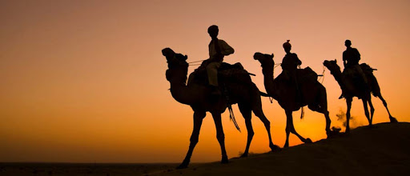

(07 Nights / 08 Days) Jaipur 2N - Jodhpur 1N - Udaipur 2N - Mount Abu 2N
Day 01: Jaipur Airport / Railway Station – Hotel : Day 01: Jodhpur Railway Station / Airport – Hotel : Meet & Greet on arrival at Jodhpur Railway Station / Airport & transfer to Hotel. Check-in to hotel. Overnight stay at Jodhpur.
Day 02: Jaipur Local Sightseeing : After breakfast start for halfday sightseeing covering Umaid Bhawan Palace, Mehrangarh Fort and Jaswant Thada. After that transfer to Jaisalmer - The Golden City. Enroute visit Jaisalmer War Museum - The Jaisalmer War Museum is located 10 km short of Jaisalmer on the Jaisalmer - Jodhpur Highway. The unique museum has been designed with the view of honouring the contributions and sacrifices of war heroes, and to highlight their bravery.
Day 03: Jaipur – Jodhpur (336 Km / 6 hrs) : After breakfast visit the Jaisalmer Fort which is made by unique Golden Lime stone, that’s why its known as Golden Fort or Sonar Kella. After that visit Patwon-ki-haveli, Nathmal-ki-haveli. Salim singh-ki-Haveli. People still live in these ancient buildings dating from 12th to 15th century. Every house has exquisite carvings and filigreed work. After that also visit Gadishar Lake. In evening proceed for camel ride on Sam Sand Dunes & you can experience the spectacular view of Sun set in Thar desert. Overnight stay at Jaisalmer..
Day 04: Jodhpur Halfday Sightseeing – Udaipur (260 Km / 5 hrs) : After breakfast transfer to Bikaner. On arrival check-in to your hotel. Overnight stay at Bikaner.
Day 05: Udaipur Local Sightseeing : After breakfast enjoy city tour of Bikaner. Visit Junagarh Fort which includes Anup Mahal, Gaj Mandir, Sheesh Mahal and Prachina Museum, Lalgarh Palace, Sadul Museum, Karni Mata Temple (Rats Temple) at Deshnok and Asia's biggest camel breeding farm to watch different breeds of Camels. Overnight stay at Bikaner.
Day 06: Udaipur – Mount Abu (186 Km / 4 ½ hrs) : After breakfast proceed to the Pink City - Jaipur. On arrival at Jaipur, check into your hotel. Overnight stay at Jaipur.
Day 07: Mount Abu Local Sightseeing : After breakfast start for full day local sightseeing in Jaipur. Visit Amber Fort & Palace, "Gaitore" Cenetophs (Front View), take a photo stop at Jal Mahal, City Palace & Museum, Jantar Mantar (Observatory) & take a photo stop at Hawa Mahal. Evening free for leisure. Overnight stay at Jaipur.